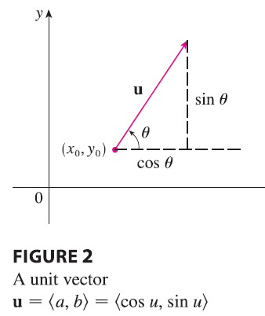
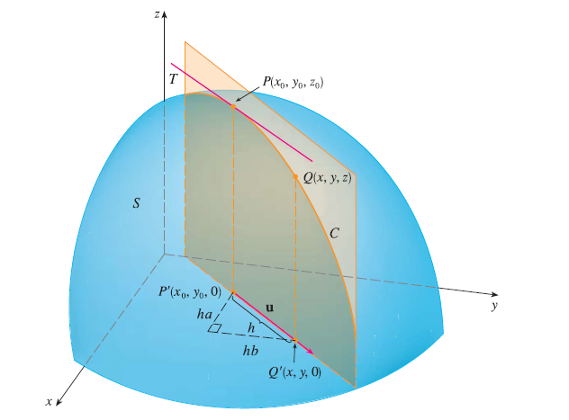

Recall that if \(z = f(x, y)\), then the partial derivatives \(f_x\) and \(f_y\) are defined as
\(f_x(x_0, y_0) = \lim_{h\to0} \frac{f(x_0 + h, y_0) - f(x_0, y_0)}{h}\)
\(f_y(x_0, y_0) = \lim_{h\to0} \frac{f(x_0, y_0 + h) - f(x_0, y_0)}{h}\)
and represent the rates of change of \(z\) in the x- and y-directions, that is, in the directions of the unit vectors i and j.

Suppose that we now wish to find the rate of change of \(z\) at \((x_0, y_0)\) in the direction of an arbitrary unit vector \(\mathbf{u} = \langle a, b \rangle\). To do this we consider the surface S with the equation \(z = f(x, y)\) (the graph of f) and we let \(z_0 = f(x_0, y_0)\).

Then the point \(P(x_0, y_0, z_0)\) lies on S. The vertical plane that passes through P in the direction of u intersects S in a curve C. The slope of the tangent line T to C at the point P is the rate of change of z in the direction of u.
If \(Q(x, y, z)\) is another point on C and P’, Q’ are the projections of P, Q onto the xy-plane, then the vector \(\vec{P'Q'}\) is parallel to u and so
\(\vec{P'Q'} = h\mathbf{u} = \langle ha, hb \rangle\)
for some scalar h. Therefore \(x - x_0 = ha\), \(y - y_0 = hb\), so \(x = x_0 + ha\), \(y = y_0 + hb\), and
\(\frac{\Delta z}{h} = \frac{z - z_0}{h} = \frac{f(x_0 + ha, y_0 + hb) - f(x_0, y_0)}{h}\)
If we take the limit as \(h \to 0\), we obtain the rate of change of z (with respect to distance) in the direction of u, which is called the directional derivative of f in the direction of u.
Definition The directional derivative of \(f\) at \((x_0, y_0)\) in the direction of a unit vector \(\mathbf{u} = \langle a, b \rangle\) is
\(D_{\mathbf{u}}f(x_0, y_0) = \lim_{h\to0} \frac{f(x_0 + ha, y_0 + hb) - f(x_0, y_0)}{h}\)
if this limit exists.
Theorem If f is a differentiable function of x and y, then f has a directional derivative in the direction of any unit vector \(\mathbf{u} = \langle a, b \rangle\) and
\[ D_{\mathbf{u}}f(x, y) = f_x(x, y)a + f_y(x, y)b \]
PROOF If we define a function g of the single variable h by
\(g(h) = f(x_0 + ha, y_0 + hb)\)
then, by the definition of a derivative, we have
\(g'(0) = \lim_{h\to0} \frac{g(h) - g(0)}{h} = \lim_{h\to0} \frac{f(x_0 + ha, y_0 + hb) - f(x_0, y_0)}{h} = D_{\mathbf{u}}f(x_0, y_0)\)
On the other hand, we can write \(g(h) = f(x, y)\), where \(x = x_0 + ha\), \(y = y_0 + hb\), so the Chain Rule gives
\(g'(h) = \frac{\partial f}{\partial x}\frac{dx}{dh} + \frac{\partial f}{\partial y}\frac{dy}{dh} = f_x(x, y)a + f_y(x, y)b\)
If we now put \(h=0\), then \(x = x_0\), \(y = y_0\), and
\(g'(0) = f_x(x_0, y_0)a + f_y(x_0, y_0)b\)
Comparing the equations for \(g'(0)\), we see that
\(D_{\mathbf{u}}f(x_0, y_0) = f_x(x_0, y_0)a + f_y(x_0, y_0)b\)
If the unit vector u makes an angle \(\theta\) with the positive x-axis, then we can write \(\mathbf{u} = \langle \cos\theta, \sin\theta \rangle\) and the formula in Theorem 3 becomes
\(D_{\mathbf{u}}f(x, y) = f_x(x, y)\cos\theta + f_y(x, y)\sin\theta\)
EXAMPLE Find the directional derivative \(D_{\mathbf{u}}f(x, y)\) if
\(f(x, y) = x^3 - 3xy + 4y^2\)
and u is the unit vector given by angle \(\theta = \pi/6\). What is \(D_{\mathbf{u}}f(1, 2)\)?